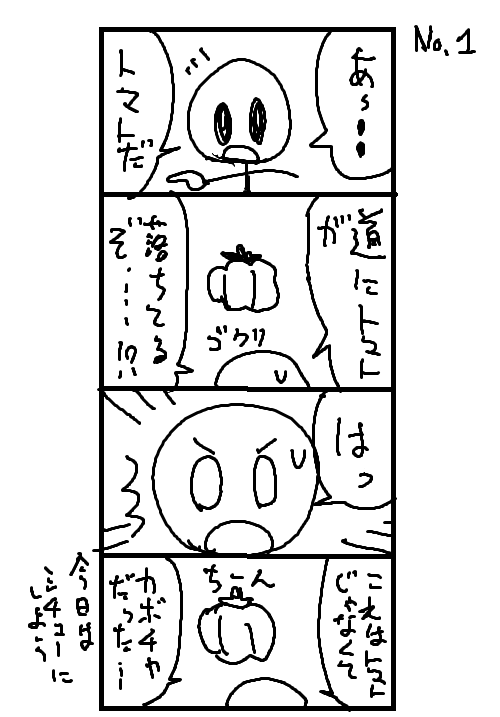

← 日付 漫画を描くには →
漫画を描くには、
絵を描けねば描けない。
なんて事はない。絶対にない。
それは手塚治虫先生が否定している。
漫画とはつまり、楽なものなのだ。
楽で楽しく描くものが漫画。
背景が描けなければ、キャラが描けなければ、
かわいい女の子が描けなれれば、
かっこいい男の子が描けなければ、
面白いストーリーが描けなければ、
漫画を描いてはいけないのか?
否。
絶対に違う。
そうじゃない。
漫画を描きたければ描けばいい。
落書きだって構わない。
起承転結になっていなくても構わない。
面白くなくても、
はために見られなくとも、
なんか描いてあってセリフでも付けとけば、
それは漫画なのだ。
漫画のハードルを上げ過ぎるな。自分。
つまり、書き始める事が大切なのだ。
なんでもいい。
まずは四コマでも描こう。
手塚治虫先生に習うなら、
便所の壁に四コマを残して人に見てもらっていた。
それでいいのだ。
漫画とは本来、そんな簡単なものなのだ。
自己満で構わないし、
誰も笑わなくてもいい。
巷にある講座などは、
単にどうしたら上手くなるか、
どうしたら面白くなるかというものばかり。
そんなものはクソッタレだ。
とにかく一番ハードルの低い漫画を描いてみよう。
よし、今から3分で描いてみる。

ソフトはペイントだ。
小難しいソフトウェアなんて本来要らないのだ。
「これでいいのだ」とは、赤塚不二夫の漫画だったか。
これでいいのだ。